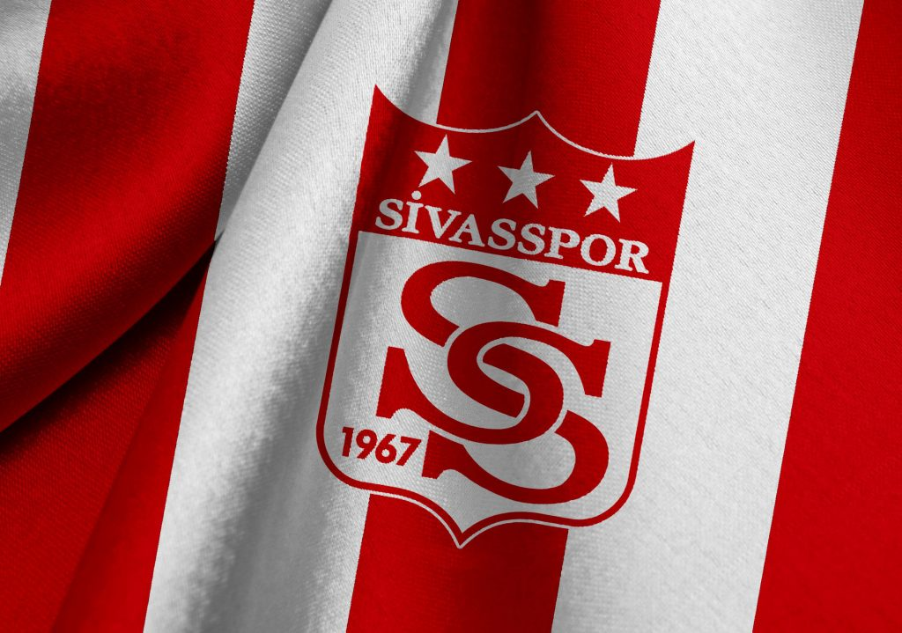
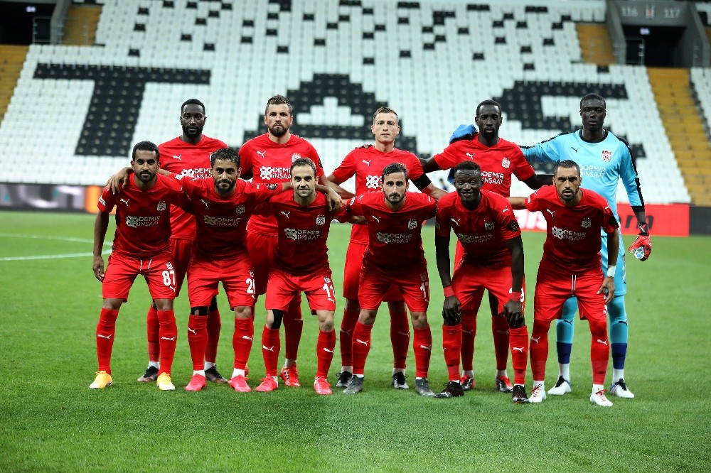

Sivas Futbol Takımı: Yükselen Bir Güç
Sivas Futbol Takımı, Türkiye'nin önemli futbol kulüplerinden biridir. Kulüp, 1967 yılında Sivas ilinde kurulmuş olup, uzun yıllardır Türk futbolunun önemli bir parçası olarak varlığını sürdürmektedir. Sivas, sahip olduğu tutkulu taraftarıyla bilinen bir şehir olduğundan, takımın yerel ve ulusal düzeydeki popülaritesi oldukça yüksektir.
Takım, Süper Lig'de mücadele etmektedir ve zaman zaman Türkiye Kupası ve diğer ulusal turnuvalarda da başarılar elde etmiştir. Sivas Futbol Takımı, sadece sahadaki performansıyla değil, aynı zamanda altyapıya da önem veren bir kulüp olarak bilinir. Genç yeteneklerin keşfedilmesi ve geliştirilmesi, kulübün uzun vadeli hedeflerinden biridir..
Sivas Futbol Takımı'nın renkleri kırmızı-beyazdır ve bu renkler, takımın taraftarları arasında büyük bir coşkuyla taşınır. Taraftarlar, maç günlerinde stadyumu kırmızı-beyaz renklere büründürerek takımlarını desteklerler. Bu tutku ve bağlılık, Sivas Futbol Takımı'nı diğer takımlardan ayıran önemli özelliklerden biridir.
Takımın tarihinde birçok unutulmaz an ve başarı bulunmaktadır. Özellikle Süper Lig'de elde ettiği başarılar, Sivas Futbol Takımı'nın ulusal düzeyde tanınmasını sağlamıştır. Taraftarlar, takımlarının her maçında sahaya büyük bir inançla çıkacağına ve mücadele edeceğine olan güvenlerini korurlar.
Sivas Futbol Takımı, sadece futbol sahalarında değil, aynı zamanda şehrin sosyal ve kültürel yaşamında da önemli bir rol oynamaktadır. Kulüp, gençlerin spor yapmalarını teşvik etmek, sporun birleştirici gücünü kullanmak ve toplum için olumlu bir etki yaratmak amacıyla çeşitli sosyal sorumluluk projelerine de katılmaktadır.
Sonuç olarak, Sivas Futbol Takımı sadece bir futbol kulübü değil, aynı zamanda şehrin ve taraftarlarının bir sembolüdür. Tutku, azim ve kararlılıkla dolu bir geçmişe sahip olan kulüp, gelecekte de başarılarıyla adından söz ettirmeye devam edecektir.